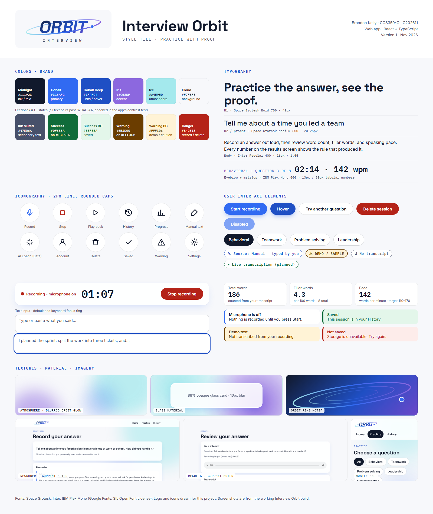

Entry 002 · Design
"It uses AI" is not a feature: designing Interview Orbit's coaching before writing it
In my last entry I said I'd write about the microphone-permission bug next. That story is coming, but this week the real work wasn't code. It was the first draft of Interview Orbit's Software Design Document and its style tile, and one problem in particular took most of my thinking: what exactly do I mean when I say the app will "use AI"?
The problem
My capstone pitch promised AI coaching on top of the practice loop that already works. When I sat down to write requirements, I realized that phrase didn't tell anyone anything. Is the AI transcribing? Scoring? Rewriting the answer? Training on people's recordings? In our class meeting this week, our instructor made the same point from a project manager's side: one casual word in a design doc can hide months of work, and "AI" is the classic example. If the doc doesn't define it, nobody can estimate it, test it, or schedule it.
There was a second, more personal problem. The whole idea of Interview Orbit is that the feedback is honest. Every number on the results screen shows the rule that produced it. A model that hands back an unexplained score would quietly break that promise.
The solution: give the AI a contract
Instead of one vague line, the design doc now treats the AI like any other component, with defined inputs, outputs, and failure behavior:
- Pre-existing models only. I'm not training anything, so I don't need a dataset of thousands of labeled interviews. That was a scope decision as much as a technical one.
- Live transcription: audio in, transcript text and word timings out. The user can edit the transcript before it's analyzed, and the server deletes the audio right after.
- Coaching: the question, the transcript, and the existing metrics go in. What comes out has to match a fixed JSON shape: strengths, improvements, which parts of a STAR answer were covered, and one follow-up question. Anything that doesn't match gets thrown away, and the user still sees their normal results.
- What the AI never touches: word count, filler rate, and pace. Those stay deterministic and testable, exactly like they are today.
Writing it this way also split the work into honest tiers. The MVP finishes and deploys what already works. Alpha adds accounts and a real database. AI lands in Beta, after the parts it depends on are solid. That ordering came straight out of trying to define the feature.

The style tile
The style tile came out of the same idea. I built it from the tokens the app already uses instead of inventing a new look. I also added a source badge for "Live transcription (planned)" next to the existing manual, demo, and none badges, so AI output has a visual label before it even exists.
What's next
Next week the design doc gets its final pass, with flow diagrams for the account and AI use cases, plus a first wireframe for the new screens. I still owe you the microphone-permission story, and it's a good one about a recording that kept running after the user had already left the screen.
Sources
- Warren, S. (n.d.). Style Tiles: A visual web design process.
- W3C. (2023). Web Content Accessibility Guidelines 2.1, Success Criterion 1.4.3: Contrast (Minimum).
- Interview Orbit source and design documents: github.com/bthoreau88/interview-orbit.